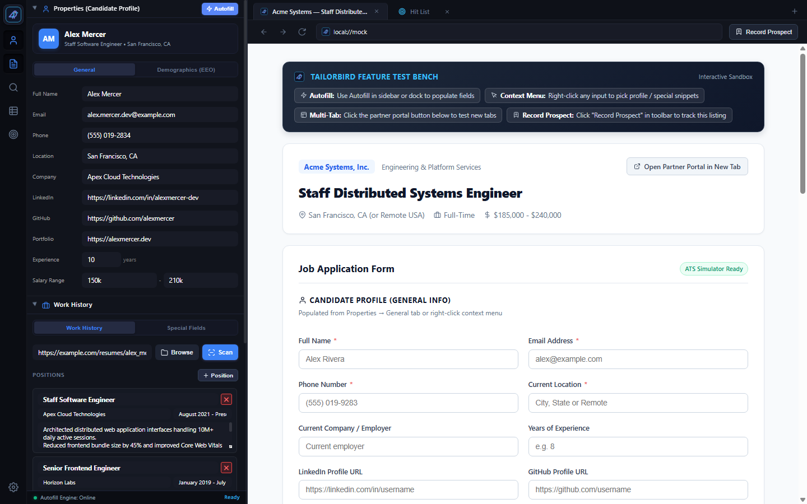
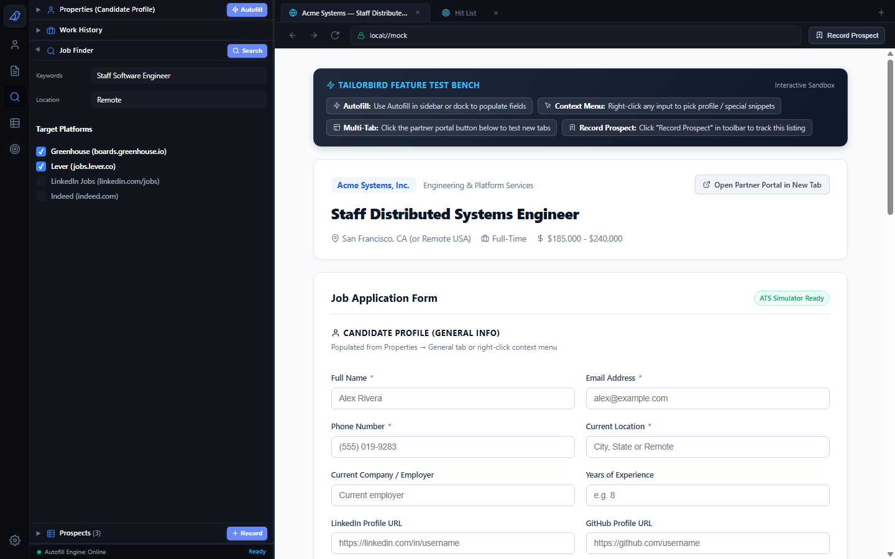
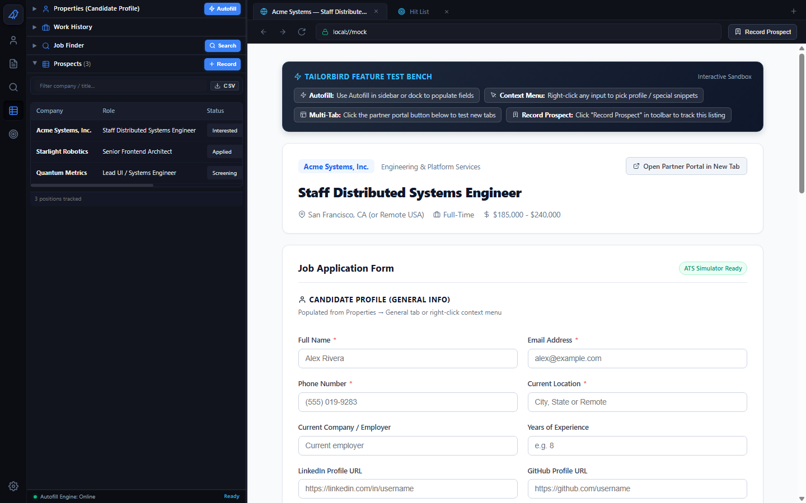
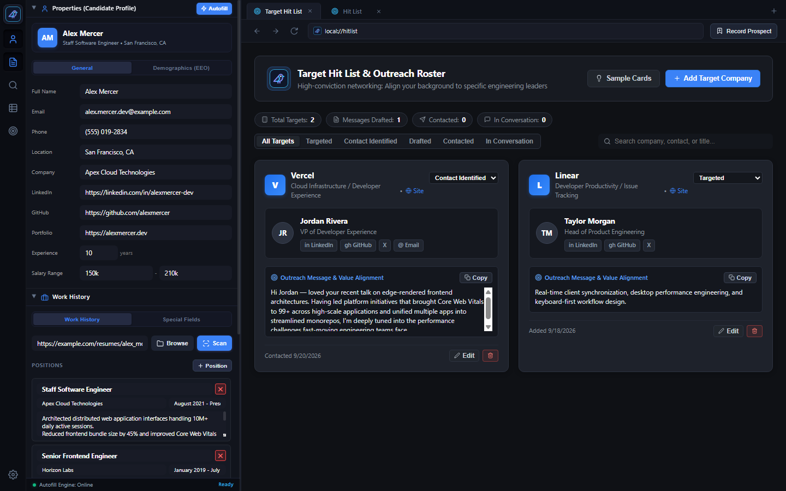

Tailorbird pairs your personal details, work history, and tracking pipelines directly next to a full browser pane, keeping your notes accessible while you fill out applications.

Store your core application details once. Past roles can be imported from a resume file or managed directly inside the panel.


Save listings as you browse without keeping open tabs or maintaining an external spreadsheet.
For proactive networking, track companies and decision-makers before jobs are posted.

All candidate profiles, work history, prospect lists, and outreach notes are stored locally on your machine in a single JSON file (tailorbird_data.json). No external account or server is required.
Customize your workspace with multiple accent color choices and an adjustable dual-pane divider that stays where you set it.
# 1. Clone the repository
git clone https://github.com/joelstransky/Tailorbird.git
cd Tailorbird
# 2. Run the application
cargo run
# 3. Or build release binary
cargo build --release